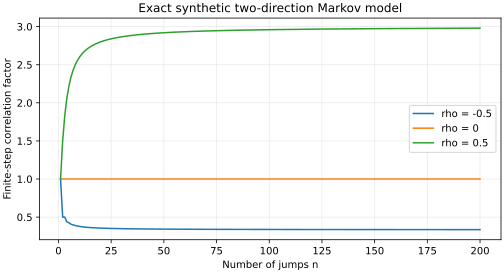

IIT Hyderabad · NPTEL · Independent study edition
Correlation factors and tracer memory
Two tracers can make the same number of jumps of the same length and spread by different amounts. One repeatedly undoes its progress; the other tends to keep its direction. A correlation factor measures this difference through the complete history of jump directions. A single immediate backjump probability is useful evidence, but it is not generally the entire calculation.
Source spine: L17–18, with L20 tutorial connections. The two-direction Markov walk is an original soluble teaching model. The FCC result is stated for the standard dilute nearest-neighbor five-frequency model and checked against a primary derivation. Selected 720p L18 frames were inspected for the rate labels and displayed formulas; this is a bounded visual check, not a full-video review.
8.1 Count correlations by their jump separation L18 00:21
Retain Chapter 7's jump vectors \(\boldsymbol\xi_j\) and fixed jump length \(\ell\). Assume their statistics are stationary with respect to jump index: joint averages depend on separation in the sequence, rather than on the starting index. Assume also zero mean displacement per jump. Define the normalized lag correlation
\[C_k=\frac{\mathbb E(\boldsymbol\xi_j\cdot\boldsymbol\xi_{j+k})}{\ell^2},\qquad C_0=1.\tag{8.1}\]Stationarity is a model assumption; it may fail during defect equilibration or changing chemical order. The expectation averages actual jump sequences, rather than independently sampled angles chosen without a physical transition rule.
In the displacement expansion, there are \(n-k\) pairs of jumps separated by k positions. Dividing equation (7.1) by \(n\ell^2\) therefore gives the exact finite-step factor
\[f_n\equiv\frac{\mathbb E|\mathbf R_n|^2}{n\ell^2} =1+2\sum_{k=1}^{n-1}\left(1-\frac{k}{n}\right)C_k.\tag{8.2}\]The weights matter for a short trajectory. If \(\sum_{k=1}^{\infty}|C_k|\lt \infty\), the bounded weights converge to one at every fixed k and a dominated-convergence argument yields
\[f=\lim_{n\to\infty}f_n=1+2\sum_{k=1}^{\infty}C_k.\tag{8.3}\]Absolute summability is a sufficient condition, not a claim about every solid. Since \(f_n\ge0\), a finite limit is nonnegative, but no general probability law requires \(f\le1\). Backtracking can give \(f\lt 1\); persistent directions can give \(f\gt 1\). A nondecaying correlation can prevent a finite normal-diffusion limit entirely.
For an isotropic stationary process with a suitable asymptotic jump clock of rate \(\Gamma\), and no additional waiting-time/direction coupling that changes this conversion, \(D^*=f\Gamma\ell^2/6\). The star again indicates tracer diffusion. Counting jumps in a simulation gives \(\Gamma\); measuring the long-time centered MSD gives \(D^*\). Comparing both can reveal memory that a rate count alone misses.
The physical source of vacancy memory is simple. Immediately after a tracer exchanges with a vacancy, that vacancy is at the tracer's old site. An immediate reverse tracer jump is now available, whereas many other tracer jumps require the vacancy to move around it first. Other host atoms compete for exchanges with the vacancy, so reversal is probable under some rates, not inevitable. An unforced homogeneous specimen can still have zero macroscopic drift while these conditional directional probabilities are strongly unequal.
8.2 A geometric correlation requires a conditional rule L18 03:30
A common shortcut replaces \(C_k\) by \(C_1^k\). Cubic symmetry alone does not justify that replacement. To see an assumption that does, suppose the conditional mean of the next jump depends on the full past only through the last jump and obeys
\[\mathbb E[\boldsymbol\xi_{j+1}\mid\boldsymbol\xi_j,\boldsymbol\xi_{j-1},\ldots] =\rho\boldsymbol\xi_j.\tag{8.4}\]The scalar \(\rho\) is dimensionless. Applying conditional expectation repeatedly gives \(\mathbb E(\boldsymbol\xi_{j+k}\mid\hbox{history through }j)=\rho^k\boldsymbol\xi_j\), and hence \(C_k=\rho^k\). The conditional rule, not the name of the crystal system, closes the hierarchy.
In a simple-cubic directional Markov model, let the next jump go forward with probability \(p_+\), backward with \(p_-\), and into each of four perpendicular directions with probability \(p_\perp\). Their sum is \(p_++p_-+4p_\perp=1\). Equal opposite perpendicular probabilities cancel their conditional vector contribution, giving \(\rho=p_+-p_-\). A path that turns sideways need not individually have zero projection on a much later step; it is conditional averaging over symmetry-related continuations that produces cancellation. Replacing that average with a claim about every individual path is incorrect.
For the simplest exactly computable example, use only two directions, \(\pm\ell\), with probability \((1+\rho)/2\) to keep the last direction and \((1-\rho)/2\) to reverse. Start the first direction uniformly, so the process is stationary and unbiased. For \(|\rho|\lt 1\), the geometric series in (8.3) gives
\[f=\frac{1+\rho}{1-\rho},\qquad f_n=\frac{1+\rho}{1-\rho} -\frac{2\rho(1-\rho^n)}{n(1-\rho)^2}.\tag{8.5}\]The second expression follows by summing the finite weighted series in (8.2); it also gives \(f_1=1\), as any one-jump result must. In the synthetic cases \(\rho=-0.5,0,0.5\), the limiting factors are \(1/3,1,3\). At \(n=200\), they are 0.33555556, 1 and 2.98. The executable companion independently propagates the complete position/direction probability distribution at 40 steps and verifies its MSD against the correlation sum. This is a deterministic probability calculation rather than a Monte Carlo estimate.

The endpoints require separate reasoning. With \(\rho=1\), the initial direction never changes: \(|R_n|=n\ell\) and \(f_n=n\), corresponding to ballistic growth rather than normal diffusion. With \(\rho=-1\), directions alternate: \(R_n=0\) for even n and has magnitude \(\ell\) for odd n, so \(f_n\to0\). The absolute-summability proof does not apply at either endpoint. Substitution into a formula derived from a convergent infinite series cannot replace these checks.
8.3 Crystal geometry is a return problem L17 13:42
A dilute interstitial solute on equivalent empty sites can approach the independent-jump limit \(f=1\). At greater concentration, blocked destinations and interactions change that conclusion. For vacancy-mediated self-diffusion, a tagged host atom and the vacancy have different histories: a homogeneous vacancy walk can have equal rates in all directions while the tagged atom backtracks conditionally on the vacancy's location.
The lecture's rough coordination estimate \(f\simeq1-2/z\) gives 0.83333333 for FCC coordination \(z=12\). It is not an exact FCC lattice result. It suppresses the detailed return paths, their projections and repeated encounters. Coordination number describes one shell of connectivity; correlation involves a vacancy wandering through the surrounding lattice and returning after arbitrarily many moves.
An explicit route to a calculation is a first-passage problem. Hold the tracer at the origin until its next exchange. For every other vacancy site r, let \(h_\alpha(r)\) be the probability that this vacancy eventually causes the next tracer jump in direction \(\alpha\). Include absorption when that exchange occurs; an escaping vacancy contributes no further exchange in that encounter. If \(w_{rr'}\) are vacancy rates between ordinary sites, \(w_{r0}\) is the exchange rate from r when available, and \(b_\alpha(r)\) is one for exchange in direction \(\alpha\) and zero otherwise, conditioning on the next event gives
\[\sum_{r'\ne0}w_{rr'}[h_\alpha(r')-h_\alpha(r)] +w_{r0}[b_\alpha(r)-h_\alpha(r)]=0.\tag{8.6}\]The rate multiplying a nonexistent edge is zero. This backward equation follows by multiplying each possible next-state probability by its outcome and rearranging; its unknowns are probabilities, not concentrations. A remote escape condition or a lattice Green-function treatment completes the problem. A finite artificial absorbing boundary discards trajectories that leave that boundary and later return, so enlarging the domain or correcting its boundary is a scientific convergence requirement. Having a numerically solved linear system is insufficient if the boundary changed the intended return problem.
A strictly one-dimensional isolated vacancy gives a useful singular limit. After its exchange with a tagged atom, it cannot pass around that atom. Repeated tagged jumps undo earlier ones, and the tag stays in the two positions adjacent to that vacancy as the vacancy explores either side. Its displacement remains bounded and its long-time factor tends to zero under this single-vacancy setup. Multiple vacancies, finite concentrations, a different jump network or a different thermodynamic limit are different problems; the example does not prove that all one-dimensional transport is zero.
Interstitialcy adds another bookkeeping issue: successive tagged jumps may alternate between different states or lengths. As an original simplified illustration, group two displacements of lengths \(\ell_A,\ell_B\) into one cycle, assume distinct cycles are independent and have zero vector mean, and let the mean intracycle angle cosine be c. Then the cycle has second moment \(\ell_A^2+\ell_B^2+2\ell_A\ell_Bc\). Relative to the uncorrelated contribution of its two constituent moves, the factor is \(1+2\ell_A\ell_Bc/(\ell_A^2+\ell_B^2)\). Actual interstitialcy can retain memory across cycles and needs additional correlations. A formula for one selected sequence cannot be transferred to every interstitialcy mechanism merely by name.
8.4 The dilute FCC five-frequency model L18 18:59
A substitutional solute B changes nearby vacancy energies and jump barriers. The standard five-frequency model assumes a dilute solute, dilute monovacancies, FCC nearest-neighbor jumps, and solute–vacancy interactions restricted to the first neighbor shell. Outside that local environment, equivalent solvent exchanges recover one bulk rate. Five per-edge successful jump rates, all in s⁻¹, distinguish the events:
| Rate | Event | Role in a tracer encounter |
|---|---|---|
| \(\omega_0\) | Bulk solvent–vacancy exchange | Controls remote wandering. |
| \(\omega_1\) | Solvent exchange keeping the vacancy in B's nearest-neighbor shell | Rotates the pair orientation without moving B. |
| \(\omega_2\) | B–vacancy exchange | Moves the tagged solute. |
| \(\omega_3\) | Vacancy leaves that shell | Dissociates the nearest-neighbor pair. |
| \(\omega_4\) | Vacancy enters that shell | Associates the pair again. |
From a nearest-neighbor vacancy site there is one exchange with B, four within-shell moves and seven outward moves. Competing exponential clocks therefore give the probability that the next vacancy event immediately reverses the preceding solute exchange:
\[p_{\rm immediate}=\frac{\omega_2}{\omega_2+4\omega_1+7\omega_3}.\tag{8.7}\]This is not the probability of every eventual reverse tracer jump. The vacancy can rotate around B or leave the first shell and return before B moves again. A completed encounter includes all those solvent moves.
For these standard rate conventions, the full dilute model has the solute tracer factor
\[f_B^*=\frac{2\omega_1+7F\omega_3} {2\omega_2+2\omega_1+7F\omega_3}.\tag{8.8}\]Here F is the dimensionless lattice-return/escape function appropriate to the model, dependent on \(\omega_4/\omega_0\). It accounts for returns after dissociation; it must come from the corresponding exterior-lattice problem or a documented approximation. The displayed expression is checked against Bocquet, §3.3, PDF page 11. The L18 25:00 slide has inconsistent rotation coefficients between its approximate and “exact” expressions. Equation (8.8) uses the verified standard per-edge convention instead of combining those displayed coefficients.
Several checks expose the physics without solving the exterior problem here. For fixed positive rotation/escape contribution, \(\omega_2\to0\) gives \(f_B^*\to1\): long solvent rearrangements largely erase direction memory before the slow solute moves again. If \(\omega_1=0\) and \(F\omega_3=0\) while \(\omega_2\gt 0\), the factor vanishes because exchange just retraces itself. Large \(\omega_2\) at fixed other rates makes many rapid tracer exchanges mostly ineffective for net spreading. Multiplying every rate by a common positive factor leaves f unchanged; it changes the physical time scale, and thus D, rather than directional correlations.
For a synthetic algebraic example take \(\omega_1=1\), \(\omega_2=2\), \(\omega_3=0.5\) s⁻¹ and supply \(F=0.8\). Equation (8.7) gives 0.21052632, while (8.8) gives 0.54545455. These numbers answer different questions. The F input is illustrative; the companion does not pretend to solve an FCC lattice-return integral or identify a real alloy's \(\omega_4/\omega_0\).
BCC has a different nearest-neighbor shell connectivity: there is no analogous within-first-shell nearest-neighbor rotation. The restricted expression displayed in L18 26:00 is \(f_B^*=7F_3\omega_3/(2\omega_2+7F_3\omega_3)\), with its BCC escape function \(F_3\). This change is geometric and model-specific. Longer-ranged interactions, more vacancy shells, interstitial mechanisms and concentrated solutes require a larger network; one cannot set \(\omega_1=0\) in a formula and thereby establish every aspect of an arbitrary BCC alloy.
8.5 Binding constrains ratios, not every rate L18 23:06
Let the free energy of a vacancy at a specified near-solute site be lower than at a specified distant site by positive binding free energy \(g_b\). The equilibrium probability ratio for those individual configurations is \(p_{\rm near}/p_{\rm far}=\exp[g_b/(k_BT)]\). Detailed balance on an outward/inward edge gives \(p_{\rm near}\omega_3=p_{\rm far}\omega_4\), so
\[\frac{\omega_3}{\omega_4}=\exp[-g_b/(k_BT)].\tag{8.9}\]This statement uses configuration free energies including their nonconfigurational entropy. It compares reverse rates on the same edge, not total outward/inward rates with different neighbor multiplicities. Counting the multiplicities belongs in the population balance. A shared saddle energy determines the two barrier heights relative to their different starting energies, and fixes this ratio; its absolute height is still an independent kinetic input.
Binding may increase the probability of finding a vacancy beside B while also increasing return memory or slowing dissociation. The solute tracer coefficient is schematically \(D_B^*=\ell^2\omega_2 P_{\rm near}f_B^*/6\), where \(P_{\rm near}\) is the mean number of available nearest-neighbor vacancies per solute in the dilute single-occupancy limit. If a per-neighbor vacancy probability is used instead, the factor z belongs explicitly in that definition. Thus binding, the exchange rate and correlation all enter; favorable binding alone does not imply faster long-range diffusion.
Inference is correspondingly limited. A measured D supplies a combination of population, rate and correlation, while f itself depends on rate ratios. Multiplying all rates by a common factor changes D but leaves f fixed. Distinct changes in population and exchange rate can compensate each other in D. Independent defect-population information, several transport observables or atomistic barrier calculations are needed to separate them. The broader-range treatment in Bocquet's paper, introduction and §§3–4.2, also makes clear why a five-frequency truncation needs a stated interaction range. Only those specified parts were consulted here; the complete numerical lattice-integral implementation is outside this chapter's laboratory.
8.6 Exercises with worked solutions
1. Recover the finite-step weights
Starting from equation (7.1), derive equation (8.2). Why is replacing \(1-k/n\) by one unjustified for an arbitrary short walk?
Worked solution
At separation k, pairs are \((1,1+k),\ldots,(n-k,n)\), giving \(n-k\) equal expectations \(\ell^2C_k\) under stationarity. The diagonal sum is \(n\ell^2\). Divide the resulting expression by that quantity to obtain (8.2). For k comparable to n, the weight is appreciably smaller than one: there are few such pairs. Passing to the infinite series requires an additional limiting argument, with absolute summability sufficient to control the tail.
2. Check the Markov model by two methods
For the two-direction model with \(\rho=-0.5\), find the 40-step and limiting factors. Describe how the executable distribution calculation checks the formula without sampling random angles.
Worked solution
Keeping the last direction has probability 0.25, so the process favors reversal. Equation (8.5) gives \(f_{40}=0.34444444\) and \(f=1/3\). The code stores the probability at every allowed position and previous direction, sends each probability to the next states with probabilities 0.25 and 0.75, and sums position squared times final probability. Dividing its MSD by 40 reproduces the finite correlation sum to floating-point precision. Normalization is checked at the same time.
3. Disprove a universal geometric closure
Choose two independent unbiased unit jump vectors A and B from the six cubic directions, then repeat A,B,A,B indefinitely. The joint law is unchanged by shifting the sequence one place. Compute \(C_1\) and \(C_2\). Does cubic symmetry force \(C_2=C_1^2\)?
Worked solution
Independence and zero means give \(C_1=\mathbb E(A\cdot B)=0\), whereas every second jump is identical, giving \(C_2=1\). The sequence is stationary under index shifts because interchanging independently identically distributed A and B preserves the joint law; it is also cubically symmetric. Its long memory violates the conditional closure (8.4). After \(n=2M\) steps, \(R=M\ell(A+B)\), so \(\mathbb E|R|^2=2M^2\ell^2\) and \(f_n=M\), not a finite normal-diffusion factor. Symmetry does not establish temporal mixing.
4. Distinguish immediate reversal from a complete encounter
Use the synthetic FCC rates in §8.4 to calculate the immediate-reversal probability and full factor. Test the slow-solute limit and explain why the two quantities cannot be equated.
Worked solution
The immediate probability is \(2/(2+4+3.5)=0.21052632\). The correlation factor is \((2+2.8)/(4+2+2.8)=0.54545455\), using the supplied F. Immediate reversal classifies the next vacancy event; the full factor combines net tracer displacement with all rotations, dissociations, returns and repeated tracer exchanges. Letting \(\omega_2\to0\) at fixed positive numerator makes f approach one, even though a vacancy may perform many moves before that slow tracer exchange. F must be supplied from a justified return calculation for a real application.
5. Audit binding and multiplicities
Derive equation (8.9). Would multiplying \(\omega_3\) by seven while leaving \(\omega_4\) as a per-edge rate preserve that equation? Does a known binding free energy determine the absolute exchange rates?
Worked solution
Detailed balance equates equilibrium flows on one reversible edge, \(p_{\rm near}\omega_3=p_{\rm far}\omega_4\). The Boltzmann probability ratio gives the stated exponential. Multiplying only the outward rate changes the counted object to a sum over edges and mixes incompatible conventions. The near/far state counts would then need explicit multiplicities. Binding fixes an equilibrium free-energy difference and a rate ratio; raising the common saddle changes both absolute rates without changing their ratio.
6. Identify what a tracer experiment determines
Suppose only \(D_B^*\) is measured and vacancy population is unknown. Explain two sources of ambiguity in extracting the five rates. What observations could help?
Worked solution
The coefficient contains the product of a near-solute vacancy population, exchange rate and correlation factor. Population and exchange rate can compensate each other. In addition, f depends on rate ratios and the exterior return function, so several sets of rates can yield the same correlation and coefficient. Independent vacancy measurements constrain population; measurements sensitive to different rate combinations, or computed formation and saddle free energies with detailed balance enforced, add information. A single measured number cannot uniquely determine five kinetic rates merely because a five-frequency formula exists.
8.7 Sources and limits
L17 motivates tracer memory; L18 supplies the lag-sum and five-frequency topics, supplemented by L20. Selected L18 frames at 24:05, 25:00 and 26:00 were inspected. The standard FCC expression and its scope were checked in J. L. Bocquet, “Correlation factor for diffusion in cubic crystals with solute-vacancy interactions of arbitrary range,” introduction and §§3–4.2. The Python companion verifies the original Markov example and algebraic limiting cases; it does not reproduce the paper's full exterior-lattice solution. No unverified source-table number or escape-function fit is needed for these demonstrations.
Python laboratory
Run code/ch08.py. Inputs and scientific limits are specified in the chapter and program.
Complete runnable source
"""Synthetic correlated-walk moments and five-frequency sensitivity."""
import json
from pathlib import Path
import numpy as np
import matplotlib
matplotlib.use("Agg")
matplotlib.rcParams["svg.hashsalt"] = "ch08"
import matplotlib.pyplot as plt # noqa: E402
ROOT = Path(__file__).resolve().parents[1]
def finite_factor(n, rho):
lag = np.arange(1, n)
return float(1 + 2 * np.sum((1 - lag / n) * rho**lag))
def distribution_msd(n, rho):
"""Propagate the full two-direction position distribution."""
keep = (1 + rho) / 2
probability = np.zeros((2 * n + 1, 2))
probability[n, :] = 0.5
for _ in range(n):
updated = np.zeros_like(probability)
updated[1:, 1] = (
keep * probability[:-1, 1] + (1 - keep) * probability[:-1, 0]
)
updated[:-1, 0] = (
keep * probability[1:, 0] + (1 - keep) * probability[1:, 1]
)
probability = updated
assert np.isclose(probability.sum(), 1)
positions = np.arange(-n, n + 1)
return float(np.sum(positions**2 * probability.sum(axis=1)))
def fcc_factor(w1, w2, w3, escape):
numerator = 2 * w1 + 7 * escape * w3
return numerator / (2 * w2 + numerator)
def run():
rhos = [-0.5, 0.0, 0.5]
checks = []
for rho in rhos:
moment = distribution_msd(40, rho)
assert np.isclose(moment, 40 * finite_factor(40, rho))
checks.append(
{
"rho": rho,
"f_40": moment / 40,
"f_200": finite_factor(200, rho),
"f_infinity": (1 + rho) / (1 - rho),
}
)
n = np.arange(1, 201)
fig, ax = plt.subplots(figsize=(7, 3.8), layout="constrained")
for rho in rhos:
ax.plot(
n,
[finite_factor(int(count), rho) for count in n],
label=f"rho = {rho:g}",
)
ax.set(
xlabel="Number of jumps n",
ylabel="Finite-step correlation factor",
title="Exact synthetic two-direction Markov model",
)
ax.grid(alpha=0.25)
ax.legend()
fig.savefig(ROOT / "assets/ch08-correlation.svg", metadata={"Date": None})
plt.close(fig)
w1, w2, w3, escape = 1.0, 2.0, 0.5, 0.8
immediate_reverse = w2 / (w2 + 4 * w1 + 7 * w3)
factor = fcc_factor(w1, w2, w3, escape)
assert fcc_factor(w1, 0, w3, escape) == 1
assert fcc_factor(0, w2, 0, escape) == 0
scale_check = fcc_factor(10 * w1, 10 * w2, 10 * w3, escape)
assert np.isclose(factor, scale_check)
return {
"synthetic": True,
"walk_checks": checks,
"rough_fcc_1_minus_2_over_z": 1 - 2 / 12,
"five_frequency_example": {
"w1_per_s": w1,
"w2_per_s": w2,
"w3_per_s": w3,
"externally_supplied_F": escape,
"immediate_reverse_probability": immediate_reverse,
"full_model_f": factor,
"scaled_all_rates_f": scale_check,
"note": "F is illustrative input, not a lattice-return solution.",
},
}
if __name__ == "__main__":
print(json.dumps(run(), indent=2))
Recorded execution output
{
"synthetic": true,
"walk_checks": [
{
"rho": -0.5,
"f_40": 0.34444444444443445,
"f_200": 0.3355555555555554,
"f_infinity": 0.3333333333333333
},
{
"rho": 0.0,
"f_40": 1.0,
"f_200": 1.0,
"f_infinity": 1.0
},
{
"rho": 0.5,
"f_40": 2.9000000000000905,
"f_200": 2.98,
"f_infinity": 3.0
}
],
"rough_fcc_1_minus_2_over_z": 0.8333333333333334,
"five_frequency_example": {
"w1_per_s": 1.0,
"w2_per_s": 2.0,
"w3_per_s": 0.5,
"externally_supplied_F": 0.8,
"immediate_reverse_probability": 0.21052631578947367,
"full_model_f": 0.5454545454545455,
"scaled_all_rates_f": 0.5454545454545454,
"note": "F is illustrative input, not a lattice-return solution."
}
}